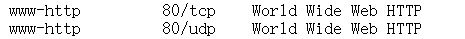
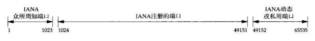
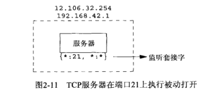
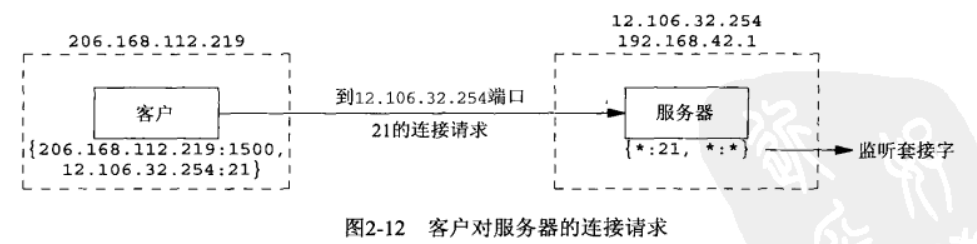
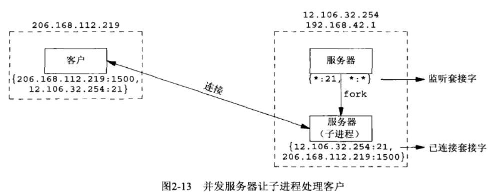
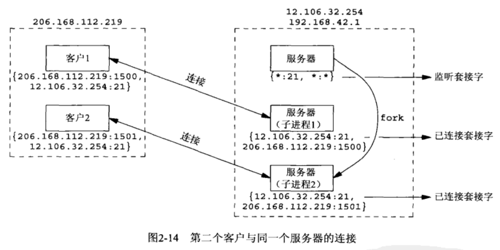

[UNP]:端口与并发服务器
1. 端口号
**IANA(theInternet Assigned Numbers Authority)**维护着一份端口号清单，最后一份文档作为RFC[1700]发出
其将端口号划分为3段:
众所周知的端口号（0~1023）
服务器通常需要使用到这些众所周知的端口号，它们专用于某些特定的服务，如端口号80就专用于Web服务

已登记的端口（1024~49151）
IANA不对这些端口号加以控制，许多服务可以绑定到这些端口
临时端口(49152~65535)
也被称为动态端口，私有端口，经常用于客户的临时分配
示意图

2. 并发服务器
并发服务器中通常会有一个主循环，每当有一个新的连接到达时，就会fork()一个子进程来处理新的连接
下面给出一个服务器连接流程示意:
假设有一台多宿主机用于服务器，其IP地址为12.106.32.254和192.168.42.1, 其在端口21上执行监听

这里的*是通配符
第一个*表示服务器在任意本地接口的端口21上等待连接请求
后面的*表示，等待任意IP地址的主机的任意端口上的连接请求
有一台IP地址为206.168.112.219的主机，它与服务器建立连接，使用的临时端口为1500

当服务器接收到连接时，其
fork()出一个副本，让子进程来处理客户的请求
从上图中我们可以得出很多信息:
- 服务器有两种套接字: 监听套接字与已连接套接字，他们使用的是相同的本地端口(21)
- 当连接建立完成，已连接套接字的套接字对就被填充完成
同一个客户机的另一个客户请求连接到同一个服务器，客户主机为其分配一个临时端口

最终的效果如上图所示，可以发现，服务器上的不同子进程使用的本地IP地址与端口号可以是相同的，因此，当一个报文到达时，必须结合发送方的IP地址与端口号，才能够判断由哪个进程接受该报文
本博客所有文章除特别声明外，均采用 CC BY-SA 4.0 协议 ，转载请注明出处！